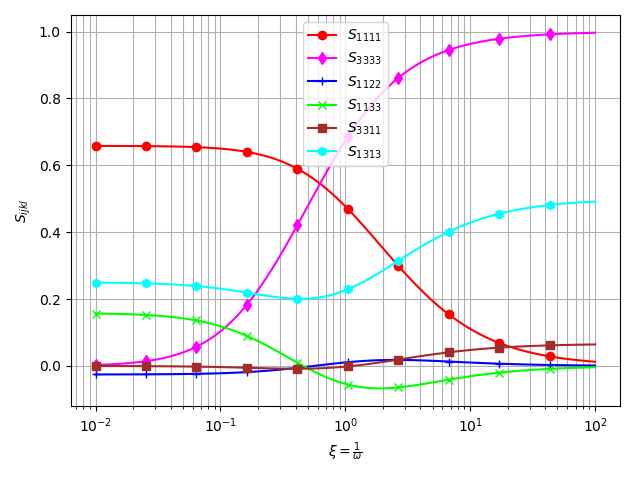

Simplified approach to the derivation of the relationship between Hill polarization tensors of transformed problems and applications
![]()
This work aims at proposing a general framework based on an intrinsic tensor formalism to relate Hill polarization tensors of elastic problems associated by a linear transformation without detailing the resolution of the problems. Such an approach somehow casts a new light on the calculation of some Hill tensors already known in the literature by means of other methods or other presentations. In particular it allows to avoid the calculation of any Green tensor or derivatives and it boils down to very compact expressions which are rather easy to implement. The application of the method to the case of an arbitrary ellipsoid embedded in an elliptically orthotropic matrix recalls that the Hill tensor can be built from an associated isotropic case but also puts in evidence that the elliptically orthotropic case is the only one that can be derived from an isotropic counterpart. Another application of the method shows that the Hill tensor of a spheroid embedded in a coaxial transversely isotropic matrix can be derived from an associated problem involving a sphere in a modified transversely isotropic matrix. This approach provides new simple and compact expressions for the Hill tensor from which the known limits corresponding to flat spheroid or strongly prolate shapes are retrieved.
Hill polarization tensor, transformed problem, elliptically orthotropic matrix, transversely isotropic matrix
Author-accepted manuscript (postprint). This is the accepted version of an article published by Elsevier in the International Journal of Engineering Science. The version of record is available at doi:10.1016/j.ijengsci.2020.103326. Please cite as: J.-F. Barthélémy, “Simplified approach to the derivation of the relationship between Hill polarization tensors of transformed problems and applications”, International Journal of Engineering Science 154 (2020) 103326. © 2020 Elsevier Ltd.
This author-accepted manuscript is made available under the Creative Commons Attribution-NonCommercial-NoDerivatives 4.0 International (CC BY-NC-ND 4.0) license. 
1 Introduction
From the pionneering works of Eshelby [1] and Hill [2], the major role played by the Eshelby tensor or by the Hill polarization tensor corresponding to a reference behavior and an ellipsoidal inclusion has become undeniable since one or the other is the fundamental tool to build a large variety of homogenization schemes ([3], [4]). However the practical calculation of the elastic Hill tensor, so called after [5], may not be as easy as in the framework of conduction ([6], [4]). Indeed whereas the case of an isotropic reference medium yields an analytical expression of the Hill tensor whatever the shape of the ellipsoid, requiring at worst the evaluation of elliptic integrals ([7], [4]), rather few analytical expressions can be derived when the reference medium is anisotropic. Among them one can cite the case of a spheroid aligned in a transversely isotropic matrix ([8], [9], [7], [10], [4]). Other analytical results can also be obtained for extreme shapes of ellipsoids in certain matrix anisotropy. The case of a cylinder of elliptical section in an anisotropic matrix is treated in [11] with simplified formulation when the behavior is orthotropic of axes aligned with those of the cylinder. The first order expansion of the Hill tensor of a long cylinder of very flat elliptical section, often referred to as a two-dimensional crack, aligned with the axes of an orthotropic matrix is developed in [12] and extended in [13] to the case of a cylinder rotated around its axis and [8] presents the corresponding solution to the problem of a penny-shaped crack in the plane of a transversely isotropic matrix. Beyond the calculation of Hill tensors or crack compliance contributions, it is worth mentioning that the complete displacement, strain and stress field solutions in an anisotropic matrix embedding a two-dimensional crack have been derived ([14], [15], [16]). Besides these analytical solutions, some numerical strategies have also been developed to determine the Hill tensor or its first order expansion with respect to the aspect ratio for a crack. These strategies often start from expressions under the form of integrals over the unit sphere obtained after a reasoning based on Fourier transform ([17], [18]) of plane-wave expansion ([19]), extended to the case of 2D or 3D cracks ([12], [20], [21]). Such integrals may be well suited for classical ([22], [23]) or adaptive gaussian cubature ([24]) but resolutions based on the Cauchy residue theorem have also been considered ([18], [11], [25], [21]). This latter technique allows to improve a lot the calculation time in the full anisotropic case but may lead to problems of accuracy in the vicinity of material symmetry leading to multiple poles in Cauchy residue theorem.
A very fruitful idea to reach new families of elastic solutions has been developed thanks to the concept of transformed problems ([26], [27], [28]). By introducing a consistent set of relationships between the parameters defining associated problems (position, stiffness and boundary conditions), the solution fields (displacement, strain and stress) of both problems can be deduced the ones from the others, the objective being that one of them is much easier to solve. As a consequence, it is possible to build new elementary solutions such as the Green tensors corresponding to several types of matrix behavior, among which the ellipsoidal anisotropy ([29]) and transformed transversely isotropic one [30]. Another consequence put in evidence in [26] and [27] is the possibility to derive the Eshelby tensor of a given problem from that of a simpler one after a complete analysis of the set of equations at stake.
The objective of the present paper is to derive relationships between Hill tensors of associated problems by a simplified approach, without resorting to the resolution of the Green tensor and without any reference to the fundamental equations of the inclusion problems. Then some applications are detailed emphasizing on the strength of the method to produce rather simple and compact expressions of the Hill tensor. In Section 2, the relationship between associated Hill tensors are derived in an intrinsic tensor formalism from the formula expressed as an integral over the unit sphere. The instrinsic tensor formalism simplifies the identification of the transformed Hill tensor from the initial one. This relationship between Hill tensors is then leveraged in Section 3 as an alternative to the method used in [31] to derive a compact intrinsic expression of the Hill tensor related to an arbitrary ellipsoid embedded in an elliptically orthotropic matrix. It is finally exploited in Section 4 to revisit the problem of the spheroid embedded in a transversely isotropic matrix of same symmetry axis. Although the solution to the Hill and Eshelby tensors has already been obtained by other methods ([8], [9], [7], [10], [4]), the present one offers another demonstration leading to new compact expressions validated against the same example as in [10] or [4]. Finally the limit cases of a penny-shaped crack and a circular cylinder are retrieved.
2 Transformation of the Hill polarization tensor in elasticity
The tensor conventions adopted in this paper are inspired from the presentation proposed in [32] and are recalled in Section 6.
Among the different expressions of the Hill polarization tensor obtained by means of a reasoning based on Fourier transform or plane-wave decompostion ([19],[18]), the most judicious for the present developments is
\[ \uuuu{P}(\uu{A},\uuuu{C})=\frac{1}{4\pi} \int_{\norm{\uv{\zeta}}=1} (\uu{A}^{-1}\cdot\uv{\zeta})\sotimes \Big((\uu{A}^{-1}\cdot\uv{\zeta})\cdot\uuuu{C} \cdot(\uu{A}^{-1}\cdot\uv{\zeta})\Big)^{-1} \sotimes(\uu{A}^{-1}\cdot\uv{\zeta}) \ud S_{\zeta} \tag{1}\]
where \(\uuuu{C}\) is the stiffness tensor of the reference medium and \(\uu{A}\) is the inversible (not necessarily symmetric) second-order tensor allowing to define the ellipsoid \(\mathcal{E}_{\uu{A}}\) associated to \(\uuuu{P}(\uu{A},\uuuu{C})\) as
\[ \x\in\mathcal{E}_{\uu{A}} \quad\Leftrightarrow\quad \x\cdot(\trans{\uu{A}}\cdot\uu{A})^{-1}\cdot\x\leq 1 \tag{2}\]
It follows from the definition Eq. 2 that the radii and axes of the ellipsoid are respectively given by the square roots of the eigen values and eigen vectors of \(\trans{\uu{A}}\cdot\uu{A}\).
The tensor formalism and the properties of the products \(\sotimes\) and \(\sboxtimes\) introduced in Section 6 allow to rewrite Eq. 1 under the form
\[ \uuuu{P}(\uu{A},\uuuu{C})=\frac{1}{4\pi} (\uu{A}^{-1}\sboxtimes\uu{A}^{-1}): \left[ \int_{\norm{\uv{\zeta}}=1} \uv{\zeta}\sotimes \left(\uv{\zeta}\cdot \trans{(\uu{A}^{-1}\sboxtimes\uu{A}^{-1})}:\uuuu{C}: (\uu{A}^{-1}\sboxtimes\uu{A}^{-1}) \cdot\uv{\zeta}\right)^{-1} \sotimes\uv{\zeta} \ud S_{\zeta}\right] :\trans{(\uu{A}^{-1}\sboxtimes\uu{A}^{-1})} \tag{3}\]
All the strategy relies on the possibility to transform the integrand into a similar one but associated to another stiffness tensor \(\uuuu{\tilde{C}}\) which would allow a simple (ideally analytical) calculation of the corresponding Hill tensor, for example an isotropic stiffness if possible. In other words, the idea is to be able to identify an inversible second-order tensor \(\tilde{\uu{A}}\) and a positive definite fourth-order tensor \(\tilde{\uuuu{C}}\) satisfying a relationship of the form
\[ \trans{(\uu{A}^{-1}\sboxtimes\uu{A}^{-1})}:\uuuu{C}: (\uu{A}^{-1}\sboxtimes\uu{A}^{-1}) = \trans{(\tilde{\uu{A}}^{-1}\sboxtimes\tilde{\uu{A}}^{-1})}:\uuuu{\tilde{C}}: (\tilde{\uu{A}}^{-1}\sboxtimes\tilde{\uu{A}}^{-1}) \tag{4}\]
or
\[ \uuuu{C} = \phtrans{\Big[(\uu{\tilde{A}}^{-1}\cdot\uu{A})\sboxtimes (\uu{\tilde{A}}^{-1}\cdot\uu{A})\Big]} :\uuuu{\tilde{C}}: \Big[(\uu{\tilde{A}}^{-1}\cdot\uu{A})\sboxtimes (\uu{\tilde{A}}^{-1}\cdot\uu{A})\Big] \tag{5}\]
such that \(\uuuu{P}(\tilde{\uu{A}},\uuuu{\tilde{C}})\) is easily reachable. This entails the general relationship
\[ (\uu{A}\sboxtimes\uu{A}): \uuuu{P}(\uu{A},\uuuu{C}): \trans{(\uu{A}\sboxtimes\uu{A})} = (\uu{\tilde{A}}\sboxtimes\uu{\tilde{A}}): \uuuu{P}(\uu{\tilde{A}},\uuuu{\tilde{C}}): \trans{(\uu{\tilde{A}}\sboxtimes\uu{\tilde{A}})} \tag{6}\]
or
\[ \uuuu{P}(\uu{A},\uuuu{C}) = \Big[(\uu{A}^{-1}\cdot\uu{\tilde{A}})\sboxtimes (\uu{A}^{-1}\cdot\uu{\tilde{A}})\Big]: \uuuu{P}(\uu{\tilde{A}},\uuuu{\tilde{C}}): \phtrans{\Big[(\uu{A}^{-1}\cdot\uu{\tilde{A}})\sboxtimes (\uu{A}^{-1}\cdot\uu{\tilde{A}})\Big]} \tag{7}\]
It is worth noting that the transformation Eq. 7 somehow corresponds to the elastic counterpart of a result presented in [33] in the framework of conduction. Knowing \(\uuuu{P}(\uu{A},\uuuu{C})\), the calculation of concentration and stiffness or compliance contribution tensors related to the ellipsoid defined by \(\uu{A}\) embedded in a matrix of stiffness \(\uuuu{C}\) is straightforward ([3], [4]).
In particular for \(\tilde{\uu{A}}=\uu{1}\), Eq. 7 rewrites
\[ \uuuu{P}(\uu{A},\uuuu{C})= (\uu{A}^{-1}\sboxtimes\uu{A}^{-1}): \uuuu{P}(\uu{1},\uuuu{\tilde{C}}) :\trans{(\uu{A}^{-1}\sboxtimes\uu{A}^{-1})} \textrm{ with } \uuuu{\tilde{C}}=\trans{(\uu{A}^{-1}\sboxtimes\uu{A}^{-1})}:\uuuu{C}: (\uu{A}^{-1}\sboxtimes\uu{A}^{-1}) \tag{8}\]
where \(\uuuu{P}(\uu{1},\uuuu{\tilde{C}})\) corresponds to the Hill tensor related to a sphere embedded in a medium of stiffness \(\uuuu{\tilde{C}}\). The relationship Eq. 8 illustrates that the calculation of an arbitrary Hill tensor always boils down to the calculation of an associated one related to a sphere, as already put in evidence in [26] and [27] on the Eshelby tensor after a reasoning based on an analysis of the equations of the initial and transformed elastic problems. This ascertainment implies interesting consequences for numerical or analytical methods. Indeed, when a numerical method such as those proposed in [22], [18], [23] or [25] is required, Eq. 8 proves that the numerical strategy may only focus on the spherical inclusion and the application of the adequate transformation. Moreover, especially when searching for the simplest analytical expression if it exists, the interest of the spherical shape relies on the fact that the integration over the unit sphere in Eq. 1 is made easier since \(\uu{A}^{-1}\cdot\uv{\zeta}\) with \(\uu{A}=\uu{1}\) simply describes the unit sphere. This advantage is even clearer on the other classical form of the Hill tensor derived from Eq. 1 by change of variable (see [18])
\[ \uuuu{P}(\uu{A},\uuuu{C})=\frac{\det{\uu{A}}}{4\pi} \int_{\norm{\uv{\xi}}=1} \frac{\uv{\xi}\sotimes (\uv{\xi}\cdot\uuuu{C} \cdot\uv{\xi})^{-1} \sotimes\uv{\xi}}{\norm{\uu{A}\cdot\uv{\xi}}^3} \ud S_{\xi} \tag{9}\]
It is obviously clear that the spherical shape allows the economy of the denominator of the integrand in Eq. 9 generally responsible for terms to the power \(3/2\) which may hinder the search for compact analytical solutions.
3 Application to an arbitrary ellipsoid in an elliptically orthotropic matrix
The elliptically orthotropic or Saint Venant material as presented in [27], [34] and [31] can be written in the present formalism
\[ \uuuu{C}=\lambda\,\uu{D}\otimes\uu{D}+2\,\mu\,\uu{D}\sboxtimes\uu{D} \tag{10}\]
where \(\uu{D}\) is a symmetric positive definite second-order tensor (see [34] for detailed conditions ensuring the positive definite character of \(\uuuu{C}\)). It is clear that the isotropic case is retrieved for \(\uu{D}=\uu{1}\) and Lam'e moduli \(\lambda\) and \(\mu\).
The properties of tensor operators allow to write the left hand side of Eq. 4 with an elliptically orthotropic stiffness Eq. 10 as
\[ \trans{(\uu{A}^{-1}\sboxtimes\uu{A}^{-1})}:\uuuu{C}: (\uu{A}^{-1}\sboxtimes\uu{A}^{-1}) = \lambda\, \uu{D}' \otimes \uu{D}' +2\,\mu\, \uu{D}' \sboxtimes \uu{D}' \quad\textrm{with}\quad \uu{D}'=\trans{\uu{A}^{-1}}\cdot\uu{D}\cdot\uu{A}^{-1} \tag{11}\]
By means of the eigen values \(d_i>0\) and the orthonormal frame of eigen vectors \((\uv{E}_i)_{i=1,2,3}\) of \(\uu{D}\), the following second-order tensors are defined
\[ \uu{D}^{\nicefrac{1}{2}}= \sum_{i=1}^3\sqrt{d_i}\uv{E}_i\otimes\uv{E}_i \quad\textrm{;}\quad \uu{D}^{-\nicefrac{1}{2}}= \sum_{i=1}^3\frac{1}{\sqrt{d_i}}\uv{E}_i\otimes\uv{E}_i \quad\textrm{;}\quad \tilde{\uu{A}}=\uu{A}\cdot\uu{D}^{-\nicefrac{1}{2}} \tag{12}\]
It then follows that \(\uu{D}'\) in Eq. 11 rewrites \(\uu{D}'=\trans{\tilde{\uu{A}}^{-1}}\cdot\tilde{\uu{A}}^{-1}\) so that Eq. 4 is satisfied with \(\tilde{\uu{A}}\) defined in Eq. 12 and \(\uuuu{\tilde{C}}\) as the isotropic counterpart of Eq. 10
\[ \uuuu{\tilde{C}}=\lambda\,\uu{1}\otimes\uu{1}+2\,\mu\,\uu{1}\sboxtimes\uu{1} \tag{13}\]
Finally the introduction of Eq. 4 in Eq. 3 with \(\tilde{\uu{A}}\) defined in Eq. 12 and \(\uuuu{\tilde{C}}\) defined in Eq. 13 yields
\[ \uuuu{P}(\uu{A},\uuuu{C})= (\uu{D}^{-\nicefrac{1}{2}}\sboxtimes\uu{D}^{-\nicefrac{1}{2}}): \uuuu{P}(\tilde{\uu{A}},\uuuu{\tilde{C}}) :(\uu{D}^{-\nicefrac{1}{2}}\sboxtimes\uu{D}^{-\nicefrac{1}{2}}) \tag{14}\]
where \(\uuuu{P}(\tilde{\uu{A}},\uuuu{\tilde{C}})\) is easily calculated since \(\uuuu{\tilde{C}}\) is isotropic (see Section 8). This formula corresponds to a synthetic intrinsic expression of a result presented in a different way in [31].
Conversely, starting from an isotropic tensor \(\uuuu{\tilde{C}}\) of the form Eq. 13, il follows from Eq. 5 that the methodology presented in Section 2 is only able to reach an elliptically orthotropic material and no other kind of symmetry as already put in evidence in [26] and [27].
4 Application to a spheroid in a coaxial transversely isotropic matrix
The Hill polarization tensor corresponding to a transversely isotropic matrix embedding a coaxial spheroid has been derived in [9] (and synthetically recalled in [7]) by a method based on the explicit use of the Green tensor and its derivatives for a transversely isotropic material. The same problem has been addressed in [8] providing formulas depending on integrals remaining unevaluated except for the extreme case of penny-shaped cracks. Another method has been proposed in [10] and [4] starting from an integral over the unit sphere involving the Green tensor and its derivatives. This section aims at taking advantage of the relationship Eq. 8 to obtain new expressions of this Hill tensor based on a calculation made on an associated problem with a spherical shape.
4.1 Detailed construction of the Hill tensor by the transformation approach
To begin with, the considered spheroid here is such that the tensor \(\uu{A}\) of Eq. 2 writes in the orthonormal frame \((\ve{i})_{i=1,2,3}\)
\[ \uu{A}=a\,(\ve{1}\otimes\ve{1}+\ve{2}\otimes\ve{2})+ c\,\ve{3}\otimes\ve{3} \tag{15}\]
It is clear from Eq. 1 that the Hill tensor is insensitive to any homothety applied to \(\uu{A}\) so that Eq. 15 can be equivalently replaced by
\[ \uu{A}=\ve{1}\otimes\ve{1}+\ve{2}\otimes\ve{2}+ \omega\,\ve{3}\otimes\ve{3} \quad\textrm{ with }\quad \omega=\frac{c}{a} \tag{16}\]
This spheroid is embedded in an infinite transversely isotropic matrix such that \(\ve{3}\) also corresponds to the symmetry axis of the material. The stiffness tensor is then defined by 5 independent components in this frame \(C_{1111}\), \(C_{1122}\), \(C_{1133}\), \(C_{3333}\) and \(C_{2323}\) and can be decomposed on the Walpole basis associated with the direction \(\ve{3}\) (see Section 7) as
\[ \uuuu{C}= C_{3333}\,\uuuu{E}_{1} + (C_{1111}+C_{1122})\,\uuuu{E}_{2} + \sqrt{2}\,C_{1133}\,(\uuuu{E}_{3} + \uuuu{E}_{4}) + (C_{1111}-C_{1122})\,\uuuu{E}_{5} + 2\,C_{2323}\,\uuuu{E}_{6} \tag{17}\]
An efficient strategy of calculation of \(\uuuu{P}=\uuuu{P}(\uu{A},\uuuu{C})\) now relies on the use of the relationship Eq. 8. This means that the only difficulty consists in the calculation of the associated Hill tensor for a sphere \(\uuuu{\tilde{P}}=\uuuu{P}(\uu{1},\uuuu{\tilde{C}})\) in which \(\uuuu{\tilde{C}}\) defined by Eq. 8 remains transversely isotropic in the same frame as \(\uuuu{C}\) with components such that
\[ \tilde{C}_{ijkl}=\frac{C_{ijkl}} {\omega^{\delta_{i3}+\delta_{j3}+\delta_{k3}+\delta_{l3}}} \quad\textrm{ (no summation over repeated indices)} \tag{18}\]
where \(\delta_{ij}\) is the Kronecker delta, which means that the exponent of \(\omega\) is simply the number of occurences of the index 3 in \((i,j,k,l)\). In other words the counterpart of the decomposition Eq. 17 is
\[ \uuuu{\tilde{C}}= \frac{C_{3333}}{\omega^4}\,\uuuu{E}_{1} + (C_{1111}+C_{1122})\,\uuuu{E}_{2} + \sqrt{2}\,\frac{C_{1133}}{\omega^2}\,(\uuuu{E}_{3} + \uuuu{E}_{4}) + (C_{1111}-C_{1122})\,\uuuu{E}_{5} + 2\,\frac{C_{2323}}{\omega^2}\,\uuuu{E}_{6} \tag{19}\]
It follows from Eq. 8 that a similar relationship can be written between \(\uuuu{P}\) and \(\uuuu{\tilde{P}}\) i.e. \(P_{ijkl}=\tilde{P}_{ijkl}/\omega^{\alpha(i,j,k,l)}\). This means that \(\uuuu{P}\) can be decomposed in the Walpole basis associated to \(\ve{3}\) thanks to the corresponding components \((\tilde{p}_i)_{i=1\ldots 6}\) of \(\uuuu{\tilde{P}}\) that remain to be identified
\[ \uuuu{P}= \frac{\tilde{p}_1}{\omega^4}\,\uuuu{E}_{1} + \tilde{p}_2\,\uuuu{E}_{2} + \frac{\tilde{p}_3}{\omega^2}\,(\uuuu{E}_{3} + \uuuu{E}_{4}) + \tilde{p}_5\,\uuuu{E}_{5} + \frac{\tilde{p}_6}{\omega^2}\,\uuuu{E}_{6} \quad\textrm{ with } \tilde{p}_4=\tilde{p}_3 \textrm{ by symmetry} \tag{20}\]
Adopting as integration variables the classical spherical angles \((\theta,\varphi)\) where \(\theta\) is the colatitude and \(\varphi\) the longitude as well as the change of variable \(z=\cos{\theta}\), Eq. 1 allows to write \(\uuuu{P}(\uu{1},\uuuu{\tilde{C}})\) under the form
\[ \uuuu{\tilde{P}}=\uuuu{P}(\uu{1},\uuuu{\tilde{C}})=\frac{1}{4\pi} \int_{z=-1}^{1} \int_{\varphi=0}^{2\pi} \uv{\zeta}(z,\varphi) \sotimes \uu{\tilde{N}}(z,\varphi) \sotimes \uv{\zeta}(z,\varphi) \ud \varphi \ud z \tag{21}\]
with
\[ \uv{\zeta}(z,\varphi)=z\,\ve{3}+ \sqrt{1-z^2}\,\left(\cos{\varphi}\,\ve{1}+\sin{\varphi}\,\ve{2}\right) \quad\textrm{ and }\quad \uu{\tilde{N}}(z,\varphi)= \Big( \uv{\zeta}(z,\varphi) \cdot \uuuu{\tilde{C}} \cdot \uv{\zeta}(z,\varphi) \Big)^{-1} \tag{22}\]
Due to the geometrical and material symmetries of revolution around \(\ve{3}\) of the problem, the integration over \(\varphi\) in Eq. 21 is no other than the integration of the rotation around \(\ve{3}\) of the fourth-order tensor integrand taken at \(\varphi=0\). In addition it can be decomposed in the Walpole basis as
\[ \frac{1}{4\pi} \int_{\varphi=0}^{2\pi} \uv{\zeta}(z,\varphi) \sotimes \uu{\tilde{N}}(z,\varphi) \sotimes \uv{\zeta}(z,\varphi) \ud \varphi = \tilde{p}_1^z\,\uuuu{E}_{1} + \tilde{p}_2^z\,\uuuu{E}_{2} + \tilde{p}_3^z\,(\uuuu{E}_{3} + \uuuu{E}_{4}) + \tilde{p}_5^z\,\uuuu{E}_{5} + \tilde{p}_6^z\,\uuuu{E}_{6} \tag{23}\]
where
\[ \tilde{p}_1^z= \frac{z^2\,\tilde{N}_{33}(z,0)}{2} \tag{24}\]
\[ \tilde{p}_2^z= \frac{(1-z^2)\,\tilde{N}_{11}(z,0)}{4} \tag{25}\]
\[ \tilde{p}_3^z= \tilde{p}_4^z= \frac{z\sqrt{1-z^2}\,\tilde{N}_{13}(z,0)}{2\sqrt{2}} \tag{26}\]
\[ \tilde{p}_5^z= \frac{(1-z^2)\,\tilde{N}_{11}(z,0) +(1-z^2)\,\tilde{N}_{22}(z,0)}{8} \tag{27}\]
\[ \tilde{p}_6^z= \frac{z^2\,\tilde{N}_{11}(z,0) +z^2\,\tilde{N}_{22}(z,0) +(1-z^2)\,\tilde{N}_{33}(z,0) +2\,z\sqrt{1-z^2}\,\tilde{N}_{13}(z,0)}{8} \tag{28}\]
The determination of \(\uuuu{\tilde{P}}\)Eq. 21 is achieved by an integration of Eq. 23 over \(z\), which means an integration over \(z\) of the components Eq. 2428. To this aim, the following components of \(\uu{\tilde{N}}(z,0)\) are needed
\[ \tilde{N}_{11}(z,0)= \frac{z^2\,(\tilde{C}_{3333}-\tilde{C}_{2323}) +\tilde{C}_{2323} }{q(z)} \tag{29}\]
\[ \tilde{N}_{33}(z,0)= \frac{z^2\,(\tilde{C}_{2323}-\tilde{C}_{1111}) +\tilde{C}_{1111} }{q(z)} \tag{30}\]
\[ \tilde{N}_{13}(z,0)= \frac{-z\sqrt{1-z^2}\,(\tilde{C}_{1133}+\tilde{C}_{2323}) }{q(z)} \tag{31}\]
\[ \tilde{N}_{22}(z,0)= \frac{1}{r(z)} \tag{32}\]
where
\[ q(z)= \Big(z^2+\eta_1^2\,(1-z^2) \Big) \,\Big(z^2+\eta_2^2\,(1-z^2) \Big) \,\tilde{C}_{2323}\,\tilde{C}_{3333} \tag{33}\]
with \(\eta_1\) and \(\eta_2\) complex numbers obtained by taking the square roots (according to the convention specified in Section 9) of the two roots of the quadratic polynomial
\[ Z^2\,\tilde{C}_{2323}\,\tilde{C}_{3333} +Z\,(\tilde{C}_{1133}^2+2\,\tilde{C}_{1133}\,\tilde{C}_{2323}- \,\tilde{C}_{1111}\,\tilde{C}_{3333}) +\tilde{C}_{1111}\,\tilde{C}_{2323}=0 \tag{34}\]
and
\[ r(z)= \Big(z^2+\eta_3^2\,(1-z^2) \Big) \,\tilde{C}_{2323} \quad\textrm{ with }\quad \eta_3=\sqrt{\frac{\tilde{C}_{1111}-\tilde{C}_{1122}}{2\,\tilde{C}_{2323}}} \tag{35}\]
Note that \(\eta_1\) and \(\eta_2\) are similar to \(\gamma_1\) and \(\gamma_2\) defined in [8] and [21], the difference here being that the polynomial Eq. 34 is expressed with components of \(\uuuu{\tilde{C}}\) and not \(\uuuu{C}\).
The introduction of Eq. 2932 in Eq. 2428 and the integration \(z\) bring up integrals as those resolved in Section 9. It follows that the Walpole components of \(\uuuu{\tilde{P}}\) are given by
\[ \tilde{p}_1= \frac{ (\tilde{C}_{2323}-\tilde{C}_{1111})\,\mathcal{J}_4 +\tilde{C}_{1111}\,\mathcal{J}_2 } {2\,\tilde{C}_{2323}\,\tilde{C}_{3333}} \tag{36}\]
\[ \tilde{p}_2= \frac{ (\tilde{C}_{2323}-\tilde{C}_{3333})\,\mathcal{J}_4 +(\tilde{C}_{3333}-2\,\tilde{C}_{2323})\,\mathcal{J}_2 +\tilde{C}_{2323}\,\mathcal{J}_0 }{4\,\tilde{C}_{2323}\,\tilde{C}_{3333}} \tag{37}\]
\[ \tilde{p}_3= \tilde{p}_4= \frac{ (\tilde{C}_{2323}+\tilde{C}_{1133})\, (\mathcal{J}_4-\mathcal{J}_2) }{2\sqrt{2}\,\tilde{C}_{2323}\,\tilde{C}_{3333}} \tag{38}\]
\[ \tilde{p}_5= \frac{\tilde{p}_2}{2}+ \frac{ \mathcal{I}_0-\mathcal{I}_2 }{8\,\tilde{C}_{2323}} \tag{39}\]
\[ \tilde{p}_6= \frac{ (\tilde{C}_{1111}+\tilde{C}_{3333}+2\,\tilde{C}_{1133})\,\mathcal{J}_4 -2\,(\tilde{C}_{1111}+\tilde{C}_{1133})\,\mathcal{J}_2 +\tilde{C}_{1111}\,\mathcal{J}_0 }{8\,\tilde{C}_{2323}\,\tilde{C}_{3333}} +\frac{\mathcal{I}_2}{8\,\tilde{C}_{2323}} \tag{40}\]
where \(\mathcal{J}_k\) (\(k\in\{0,2,4\}\)) and \(\mathcal{I}_k\) (\(k\in\{0,2\}\)) respectively stand for \(\mathcal{J}_k(\eta_1,\eta_2)\) and \(\mathcal{I}_k(\eta_3)\) as defined in Section 9. As shown in [21], the real positive definite nature of \(\uuuu{\tilde{C}}\) implies that either \(\eta_1\) and \(\eta_2\) are both strictly positive real numbers or form a couple of conjugate complex numbers of strictly positive real part and non-zero imaginary part. This ensures the real character of expressions of the integrals in Table 1 and Table 2. The Hill tensor \(\uuuu{P}\) is finally obtained by Eq. 20 with the components Eq. 3640.
4.2 Practical implementation and validation
Now that the Hill tensor \(\uuuu{P}\) is fully determined, the strategy to derive it may be even more practically described from the initial stiffness tensor \(\uuuu{C}\) and the aspect ratio \(\omega\) by following the successive steps.
Find the square roots \(\gamma_1\) and \(\gamma_2\) of the roots of the polynomial
\[ Z^2\,C_{2323}\,C_{3333} +Z\,(C_{1133}^2+2\,C_{1133}\,C_{2323}- \,C_{1111}\,C_{3333}) +C_{1111}\,C_{2323}=0 \tag{41}\]
in other words
\[ \gamma_1=\sqrt{ \frac{C_{1111}\,C_{3333}-C_{1133}^2-2\,C_{1133}\,C_{2323} +\sqrt{\Delta}} {2\,C_{2323}\,C_{3333}}} \;\textrm{;}\; \gamma_2=\sqrt{ \frac{C_{1111}\,C_{3333}-C_{1133}^2-2\,C_{1133}\,C_{2323} -\sqrt{\Delta}} {2\,C_{2323}\,C_{3333}}} \tag{42}\]
with the square root defined under the convention of Section 9 and
\[ \Delta=(C_{1111}\,C_{3333}-C_{1133}^2)\, (C_{1111}\,C_{3333}-C_{1133}^2-4\,C_{1133}\,C_{2323}-4\,C_{2323}^2) \tag{43}\]
and define
\[ \gamma_3=\sqrt{\frac{C_{1111}-C_{1122}}{2\,C_{2323}}} \tag{44}\]
Here \(\gamma_1\) and \(\gamma_2\) are introduced with the same definition in [8] and [21] i.e. in an equation involving this time the actual stiffness \(\uuuu{C}\). It follows again that \(\gamma_1\) and \(\gamma_2\) are both strictly positive real numbers or form a couple of conjugate complex numbers of strictly positive real part and non-zero imaginary part. In fact it is straightforward to verify that \(\gamma_i\) (\(i\in\{1,2,3\}\)) are related to \(\eta_i\) by \(\eta_i=\omega\,\gamma_i\).
Calculate from the integrals of Section 9 the values
\[ \mathcal{J}_k=\mathcal{J}_k(\omega\,\gamma_1,\omega\,\gamma_2) \quad(k\in\{0,2,4\}) \quad\textrm{ and }\quad \mathcal{I}_k=\mathcal{I}_k(\omega\,\gamma_3) \quad(k\in\{0,2\}) \tag{45}\]
Calculate the Hill tensor by its Walpole decomposition (see Section 7)
\[ \uuuu{P}= p_1\,\uuuu{E}_{1} + p_2\,\uuuu{E}_{2} + p_3\,(\uuuu{E}_{3} + \uuuu{E}_{4}) + p_5\,\uuuu{E}_{5} + p_6\,\uuuu{E}_{6} \tag{46}\]
with
\[ p_1= \frac{ (C_{2323}-\omega^2\,C_{1111})\,\mathcal{J}_4 +\omega^2\,C_{1111}\,\mathcal{J}_2 }{2\,C_{2323}\,C_{3333}} \tag{47}\]
\[ p_2= \omega^2\,\frac{ (\omega^2\,C_{2323}-C_{3333})\,\mathcal{J}_4 +(C_{3333}-2\,\omega^2\,C_{2323})\,\mathcal{J}_2 +\omega^2\,C_{2323}\,\mathcal{J}_0 }{4\,C_{2323}\,C_{3333}} \tag{48}\]
\[ p_3= p_4= \frac{ \omega^2\,(C_{2323}+C_{1133})\,(\mathcal{J}_4-\mathcal{J}_2) }{2\sqrt{2}\,\,C_{2323}\,C_{3333}} \tag{49}\]
\[ p_5= \frac{p_2}{2} + \frac{ \omega^2\,(\mathcal{I}_0-\mathcal{I}_2) }{8\,C_{2323}} \tag{50}\]
\[ p_6= \frac{ (\omega^4\,C_{1111}+C_{3333}+2\,\omega^2\,C_{1133})\,\mathcal{J}_4 -2\,\omega^2\,(\omega^2\,C_{1111}+C_{1133})\,\mathcal{J}_2 +\omega^4\,C_{1111}\,\mathcal{J}_0 }{8\,C_{2323}\,C_{3333}} +\frac{\mathcal{I}_2}{8\,C_{2323}} \tag{51}\]
The Eshelby tensor associated to \(\uuuu{P}\) is obtained by \(\uuuu{S}=\uuuu{P}:\uuuu{C}\). In order to validate the calculation of the Hill or equivalently the Eshelby tensor, the hereabove expressions are applied to the case proposed in [10] or [4] illustrating the dependence of the components of \(\uuuu{S}\) on the aspect ratio of a spheroid embedded in a transversely isotropic matrix of same axis. The results of calculation presented in Fig. 1 show a perfect consistency with the corresponding figure in [10] or [4]. The related Python script is provided in Section 10.

4.3 Case of flat or ``penny-shaped” spheroid
Beyond the simplicity of implementation, the expressions Eq. 4751 together with the integrals evaluated and expanded in Section 9 are well adapted to the determination of the Taylor expansion of \(\uuuu{P}\) in the case of a flat spheroid modelling a crack. Indeed as put in evidence in [8], [35], [10], [3], [21] and [4], the first order expansion is needed to derive the concentration and contribution tensors or overall energy in this case and writes
\[ \uuuu{P}=\uuuu{P}^0+\omega\,\uuuu{P}^1+\grando{\omega^2} \quad\textrm{with}\quad \uuuu{P}^0=\ve{3}\sotimes \left(\ve{3}\cdot\uuuu{C}\cdot\ve{3}\right)^{-1}\sotimes\ve{3} =\frac{1}{C_{3333}}\,\uuuu{E}_{1} + \frac{1}{2\,C_{2323}}\,\uuuu{E}_{6} \tag{52}\]
and \(\uuuu{P}^1\), already expressed in [8], [10], [4] and [21], retrieved here by its Walpole components
\[ p^1_1= \frac{\pi}{2\,(\gamma_1+\gamma_2)}\, \frac{C_{1111}-(\gamma_1^2+\gamma_1\,\gamma_2+\gamma_2^2)\,C_{2323}} {C_{2323}\,C_{3333}} \tag{53}\]
\[ p^1_2= \frac{\pi}{4\,(\gamma_1+\gamma_2)}\,\left( \frac{1} {\gamma_1\,\gamma_2\,C_{3333}} + \frac{1} {C_{2323}} \right) \tag{54}\]
\[ p^1_3= -\frac{\sqrt{2}\,\pi}{4\,(\gamma_1+\gamma_2)}\,\frac{C_{1133}+C_{2323}} {C_{2323}\,C_{3333}} \tag{55}\]
\[ p^1_5= \frac{\pi}{8}\,\left( \frac{1} {\gamma_1\,\gamma_2\,(\gamma_1+\gamma_2)\,C_{3333}} + \left(\frac{1}{\gamma_1+\gamma_2}+\frac{1}{\gamma_3}\right) \,\frac{1}{C_{2323}} \right) \tag{56}\]
\[ p^1_6= \frac{\pi}{8}\,\left( \frac{C_{1111}-2\,\gamma_1\,\gamma_2\,C_{1133} -\gamma_1\,\gamma_2\, (\gamma_1^2+\gamma_1\,\gamma_2+\gamma_2^2)\,C_{3333} }{\gamma_1\,\gamma_2\,(\gamma_1+\gamma_2)\,C_{2323}\,C_{3333}} -\frac{\gamma_3}{C_{2323}} \right) \tag{57}\]
Interestingly the Eq. 5357 can even be directly compactedly expressed in terms of the sole components of \(\uuuu{C}\) by observing on the one hand that \(\gamma_3\) is given by Eq. 44 and on the other hand that \(\gamma_1^2\) and \(\gamma_2^2\) are solutions to Eq. 41 so that
\[ \gamma_1^2+\gamma_2^2= \frac{C_{1111}\,C_{3333}-C_{1133}^2-2\,C_{1133}\,C_{2323} }{C_{2323}\,C_{3333}} \tag{58}\]
\[ \gamma_1^2\,\gamma_2^2= \frac{C_{1111}}{C_{3333}} \tag{59}\]
\[ \gamma_1\,\gamma_2= \sqrt{\frac{C_{1111}}{C_{3333}}} \tag{60}\]
\[ \gamma_1+\gamma_2= \sqrt{\gamma_1^2+\gamma_2^2+2\,\gamma_1\,\gamma_2} =\sqrt{\frac{C_{1111}\,C_{3333}-C_{1133}^2-2\,C_{1133}\,C_{2323} }{C_{2323}\,C_{3333}} +2\sqrt{\frac{C_{1111}}{C_{3333}}} } \tag{61}\]
In fact the interest of the expansion Eq. 52 relies on its link with the fourth-order crack compliance contribution which is given by a limit implying the asymptotically singular inverse of the second Hill tensor ([12], [8])
\[ \uuuu{H}=\lim_{\omega\to 0}\omega\,\uuuu{Q}^{-1} \quad\textrm{with}\quad \uuuu{Q}=\uuuu{C}-\uuuu{C}:\uuuu{P}:\uuuu{C} \tag{62}\]
The limit Eq. 62 is shown in [21] to depend only on \(\uuuu{P}^1\) and not \(\uuuu{P}^0\) and more specifically on a restriction of \(\uuuu{C}:\uuuu{P}^1:\uuuu{C}\) corresponding to out-of-plane components. An interpretation of the result of [21] in the framework of Walpole decomposition leads to the conclusion that the indices of non-zero components of \(\lim_{\omega\to 0}\omega\uuuu{Q}^{-1}\) are the same as those of \(\uuuu{P}^0\) in Eq. 52, i.e. after straightforward calculation
\[ \uuuu{H}=\lim_{\omega\to 0}\omega\,\uuuu{Q}^{-1} =-\frac{1}{C_{3333}^2\,p^1_1+2\,C_{1133}^2\,p^1_2 +2\sqrt{2}\,C_{3333}\,C_{1133}\,p^1_3} \,\uuuu{E}_{1} -\frac{1}{4\,C_{2323}^2\,p^1_6}\,\uuuu{E}_{6} \tag{63}\]
where \(p^1_1\), \(p^1_2\), \(p^1_3\) and \(p^1_6\) are given in Eq. 53, Eq. 54, Eq. 55 and Eq. 57. It must be noted that this crack contribution tensor has been first derived with other notations and material set of parameters in [36] in a more general case of elliptical crack, using a different reasoning based on linear elastic fracture mechanics. In the circular case the present approach is consistent with the result of [36].
4.4 Case of strongly prolate spheroid or circular cylinder
Limits can also be obtained for the case of a strongly prolate spheroid tending towards a circular cylinder of axis aligned to that of the material symmetry. Taking advantage of the expansions Eq. 122124 and Eq. 125127 in Eq. 4751 as well as Eq. 58 and Eq. 59, the formulas derived in [10] and [4] are retrieved
\[ p_1= \grando{\frac{1}{\omega^2}} \tag{64}\]
\[ p_2= \frac{1}{2\,C_{1111}} +\grando{\frac{1}{\omega^2}} \tag{65}\]
\[ p_3= \grando{\frac{1}{\omega^2}} \tag{66}\]
\[ p_5= \frac{1}{4\,C_{1111}}+\frac{1}{2\,(C_{1111}-C_{1122})} +\grando{\frac{1}{\omega^2}} \tag{67}\]
\[ p_6= \frac{1}{4\,C_{2323}} +\grando{\frac{1}{\omega^2}} \tag{68}\]
5 Conclusion
The technique of transformation initially designed in the literature to build the complete solution of an elastic problem from that of an associated simpler one is exploited in this paper directly on the integral expression of the Hill tensor rather than on the equations of the elastic problem. This idea immediately leads to a relationship between Hill tensors of different problems involving transformed sitffness as well as transformed ellipsoidal shape. It follows an immediate application to any behavior which is accessible through a linear transformation of an isotropic matrix, namely the case of elliptically orthotropic matrix. It is shown that the Hill tensor can be expressed as a compact formula involving intrinsic tensor operations. The idea is also leveraged to build an alternative demonstration for the determination of the Hill tensor of a spheroid embedded in a transversely isotropic matrix of same axis. New expressions, which can be very easily implemented, are derived in Walpole decomposition and validated against already published results.
Acknowledgements
Fruitful discussions with Prof. Albert Giraud (GeoRessources Laboratory, Universit'e de Lorraine) and Prof. Igor Sevostianov (New Mexico State University) are gratefully acknowledged.
The author thanks Cerema and Universit'e Gustave Eiffel for allowing the creation of the joint research team entitled “'Equipe de Recherche Commune sur les Mat'eriaux pour une Construction Durable (ERC MCD)”, within which these research works were carried out.
Appendices
6 Conventions of tensor algebra
Even if an intrinsic formalism is privileged in the paper, it may be instructive when necessary in this section to refer to an index notation always related to a given orthonormal frame \((\ve{i})_{i=1,2,3}\).
The first notion that is useful to precise is that of the double-dot product since two definitions can be introduced as explained in [32] (https://sbrisard.github.io/category/tensor-algebra.html). The one adopted here is such that if \(\uu{a}\) and \(\uu{b}\) are two second-order tensors and \(\uuuu{T}\) is a fourth-order tensor
\[ \uu{a}:\uu{b}=a_{ij}\,b_{ij} \quad\textrm{and}\quad \uuuu{T}:\uu{a}=T_{ijkl}\,a_{kl}\,\ve{i}\otimes\ve{j} \tag{69}\]
where the Einstein notation of repeated indices is used and \(\otimes\) denotes the classical tensor product. This means that the double-dot product does not apply successively to the closest indices but somehow to the couple of the two last indices of the tensor to the left with the couple of the two first indices of the tensor to the right. It follows that the components of the transpose tensor \(\trans{\uuuu{T}}\) such that \(\trans{\uuuu{T}}:\uu{a}=\uu{a}:\uuuu{T}\) write \(\left(\trans{\uuuu{T}}\right)_{ijkl}=T_{klij}\).
The notation \(\sotimes\) indicates a tensor product followed by a symmetrization over the last index of the tensor to the left of the product and the first index of the tensor to the right. For instance, if \(\uv{u}\) and \(\uv{v}\) are first-order tensors (i.e. vectors)
\[ \uv{u}\sotimes\uv{v}=\frac{\uv{u}\otimes\uv{v}+\uv{v}\otimes\uv{u}}{2} \tag{70}\]
This tensor product can of course be generalized to combinations involving higher order tensors as for instance
\[ \uv{u}\sotimes\uu{a}\sotimes\uv{v}= \frac{u_i\,a_{jk}\,v_l+u_i\,a_{jl}\,v_k+u_j\,a_{ik}\,v_l+u_j\,a_{il}\,v_k}{4} \,\ve{i}\otimes\ve{j}\otimes\ve{k}\otimes\ve{l} \tag{71}\]
Another useful operator introduced in [32] is the modified tensor product denoted by \(\boxtimes\). The fourth-order tensor \(\uu{a}\boxtimes\uu{b}\) (where \(\uu{a}\) and \(\uu{b}\) are two second-order tensors) is defined by its operation over any second-order tensor \(\uu{p}\) and by its components
\[ (\uu{a}\boxtimes\uu{b}):\uu{p}=\uu{a}\cdot\uu{p}\cdot\trans{\uu{b}} =a_{ik}\,p_{kl}\,b_{jl}\,\ve{i}\otimes\ve{j} \quad\Leftrightarrow\quad \left(\uu{a}\boxtimes\uu{b}\right)_{ijkl}=a_{ik}\,b_{jl} \tag{72}\]
A symmetrized version of \(\boxtimes\) denoted by \(\sboxtimes\) can also be introduced. It operates as
\[ (\uu{a}\sboxtimes\uu{b}):\uu{p}= (\uu{a}\boxtimes\uu{b}):\left(\frac{\uu{p}+\trans{\uu{p}}}{2}\right) =\uu{a}\cdot\left(\frac{\uu{p}+\trans{\uu{p}}}{2}\right)\cdot\trans{\uu{b}} \quad\Leftrightarrow\quad (\uu{a}\sboxtimes\uu{b})_{ijkl}=\frac{a_{ik}\,b_{jl}+a_{il}\,b_{jk}}{2} \tag{73}\]
It follows from these definitions that the fourth-order identity, as an operator over second-order tensors, writes \(\uuuu{1}=\uu{1}\boxtimes\uu{1}\) where \(\uu{1}\) is the second-order identity. The fourth-order operator allowing to extract the symmetric part of a second-order tensor writes \(\uuuu{I}=\uu{1}\sboxtimes\uu{1}\). The latter tensor, which obviously complies with the conditions of minor symmetries, is classically used to play the role of fourth-order identity operating over symmetric second-order tensors.
Some remarkable relationships result from the previous definitions
\[ (\uu{a}\boxtimes\uu{b}):(\uv{u}\otimes\uv{v})= (\uu{a}\cdot\uv{u})\otimes(\uu{b}\cdot\uv{v}) \tag{74}\]
\[ (\uu{a}\boxtimes\uu{b}):(\uu{c}\boxtimes\uu{d})= (\uu{a}\cdot\uu{c})\boxtimes(\uu{b}\cdot\uu{d}) \tag{75}\]
\[ (\uu{a}\sboxtimes\uu{b}):(\uu{c}\sboxtimes\uu{d})= \frac{(\uu{a}\cdot\uu{c})\sboxtimes(\uu{b}\cdot\uu{d})+ (\uu{a}\cdot\uu{d})\sboxtimes(\uu{b}\cdot\uu{c})}{2} \tag{76}\]
\[ (\uu{a}\sboxtimes\uu{a}):(\uu{b}\sboxtimes\uu{b})= (\uu{a}\cdot\uu{b})\sboxtimes(\uu{a}\cdot\uu{b}) \tag{77}\]
\[ \trans{(\uu{a}\boxtimes\uu{b})}=\trans{\uu{a}}\boxtimes\trans{\uu{b}} \tag{78}\]
\[ \trans{(\uu{a}\sboxtimes\uu{a})}=\trans{\uu{a}}\sboxtimes\trans{\uu{a}} \tag{79}\]
\[ \textrm{but generally }\quad \trans{(\uu{a}\sboxtimes\uu{b})}\neq\trans{\uu{a}}\sboxtimes\trans{\uu{b}} \tag{80}\]
\[ (\uu{a}\boxtimes\uu{b})^{-1}=\uu{a}^{-1}\boxtimes\uu{b}^{-1} \tag{81}\]
\[ (\uu{a}\sboxtimes\uu{a})^{-1}=\uu{a}^{-1}\sboxtimes\uu{a}^{-1} \quad\textrm{ only in the sense of operators on symmetric second-order tensors} \tag{82}\]
\[ \textrm{but generally }\quad (\uu{a}\sboxtimes\uu{b})^{-1}\neq\uu{a}^{-1}\sboxtimes\uu{b}^{-1} \tag{83}\]
7 Walpole basis
The Walpole basis [37] allowing to write any fourth-order transversely isotropic relatively to a an axis oriented by the unit vector \(\n\) is composed of the six following tensors built from \(\uu{1}_n=\n\otimes\n\) and \(\uu{1}_T=\uu{1}-\uu{1}_n\)
\[ \uuuu{E}_1=\uu{1}_n\otimes\uu{1}_n \quad\textrm{ ; }\quad \uuuu{E}_2=\frac{\uu{1}_T\otimes\uu{1}_T}{2} \textrm{ ; } \uuuu{E}_3=\frac{\uu{1}_n\otimes\uu{1}_T}{\sqrt{2}} \quad\textrm{ ; }\quad \uuuu{E}_4=\frac{\uu{1}_T\otimes\uu{1}_n}{\sqrt{2}} \tag{84}\]
\[ \uuuu{E}_5=\uu{1}_T\sboxtimes\uu{1}_T-\frac{\uu{1}_T\otimes\uu{1}_T}{2} \textrm{ ; } \uuuu{E}_6=\uu{1}_T\sboxtimes\uu{1}_n+\uu{1}_n\sboxtimes\uu{1}_T \tag{85}\]
Any transversely isotropic fourth-order tensor can be decomposed as
\[ {\uuuu{L}} = {\ell}_{1}\,{\uuuu{E}}_{1} + {\ell}_{2}\,{\uuuu{E}}_{2} + {\ell}_{3}\,{\uuuu{E}}_{3}+ {\ell}_{4}\,{\uuuu{E}}_{4}+ {\ell}_{5}\,{\uuuu{E}}_{5}+ {\ell}_{6}\,{\uuuu{E}}_{6} \tag{86}\]
The six parameters can be conveniently gathered in a triplet composed of a \(2 \times 2\) matrix containing the four first parameters \(\ell_i\) (\(1\leq i \leq 4\)) and the two last parameters \(\ell_5\) and \(\ell_6\)
\[ \uuuu{L} \equiv \left( L , {\ell}_{5} , {\ell}_{6} \right) , \quad L = \left( \begin{array}{cc} {\ell}_{1} & {\ell}_{3} \\ {\ell}_{4} & {\ell}_{2} \\ \end{array} \right) \tag{87}\]
Such a synthetic notation allows simple calculations of products and inverses which consist in classical matrix or scalar products and inverses
\[ \uuuu{L} : \uuuu{M} \equiv \left( L M , {\ell}_{5} m_5 , {\ell}_{6} m_6 \right) \tag{88}\]
\[ {\uuuu{L}}^{-1} \equiv \left( {L}^{-1} , \frac{1}{{\ell}_{5}} , \frac{1}{{\ell}_{6}} \right) \tag{89}\]
8 Hill polarization tensor in an isotropic matrix
The Hill tensor of an arbitrary ellipsoid embedded in an isotropic matrix of Lam'e moduli \(\lambda\) and \(\mu\) is shown to write under the form in the elastic case (see [38])
\[ \uuuu{P}= \frac{1}{\lambda+2\,\mu} \uuuu{U} +\frac{1}{\mu}(\uuuu{V}-\uuuu{U}) \tag{90}\]
where the tensors \(\uuuu{U}\) and \(\uuuu{V}\), depending only on the ellipsoidal tensor \(\uu{A}\) of Eq. 2, are given by
\[ \uuuu{U}=\frac{\det{\uu{A}}}{4\pi} \int_{\norm{\uv{\xi}}=1} \frac{\uv{\xi}\otimes\uv{\xi}\otimes\uv{\xi}\otimes\uv{\xi}} {\norm{\uu{A}\cdot\uv{\xi}}^3}\ud S_{\xi} = \frac{1}{4\pi} \int_{\norm{\uv{\zeta}}=1} \frac{ (\uu{A}^{-1}\cdot\uv{\zeta}) \otimes (\uu{A}^{-1}\cdot\uv{\zeta}) \otimes (\uu{A}^{-1}\cdot\uv{\zeta}) \otimes (\uu{A}^{-1}\cdot\uv{\zeta}) }{\norm{\uu{A}^{-1}\cdot\uv{\zeta}}^4} \ud S_{\zeta} \tag{91}\]
and
\[ \uuuu{V}=\frac{\det{\uu{A}}}{4\pi} \int_{\norm{\uv{\xi}}=1} \frac{\uv{\xi}\sotimes\uu{1}\sotimes\uv{\xi}} {\norm{\uu{A}\cdot\uv{\xi}}^3}\ud S_{\xi} = \frac{1}{4\pi} \int_{\norm{\uv{\zeta}}=1} \frac{ (\uu{A}^{-1}\cdot\uv{\zeta}) \sotimes \uu{1} \sotimes (\uu{A}^{-1}\cdot\uv{\zeta}) }{\norm{\uu{A}^{-1}\cdot\uv{\zeta}}^2} \ud S_{\zeta} \tag{92}\]
In the case of a spherical inclusion, \(\uuuu{U}\) and \(\uuuu{V}\) are simply decomposed as
\[ \uuuu{U}=\frac{1}{3}\uuuu{J}+\frac{2}{15}\uuuu{K} \quad\textrm{ and }\quad \uuuu{V}=\frac{1}{3}\uuuu{I} \quad\textrm{ where }\quad \uuuu{I}=\uu{1}\sboxtimes\uu{1} \quad\textrm{ ; }\quad \uuuu{J}=\frac{1}{3}\uu{1}\otimes\uu{1} \quad\textrm{ ; }\quad \uuuu{K}=\uuuu{I}-\uuuu{J} \tag{93}\]
For an arbitrary ellipsoid of radii \(a\geq b \geq c\) renamed \(\rho_1=a\), \(\rho_2=b\), \(\rho_3=c\) whenever an index notation is preferable, the tensor Eq. 2 is diagonalized as \(\uu{A}=\sum_{i=1}^3\rho_i\ve{i}\otimes\ve{i}\) where the axes are given by the orthonormal frame of eigenvectors \((\ve{i})_{i=1,2,3}\) in which the components of \(\uuuu{U}\) and \(\uuuu{V}\) are conveniently expressed
\[ U_{iiii}=\frac{3(I_i-\rho_i^2I_{ii})}{2} \quad\forall\, i\in\{1,2,3\} \tag{94}\]
\[ U_{iijj}=U_{ijij}=U_{ijji}=\frac{I_j-\rho_i^2I_{ij}}{2} =\frac{I_i-\rho_j^2I_{ij}}{2} \quad\forall\, i\neq j\in\{1,2,3\} \tag{95}\]
and
\[ V_{iiii}=I_i\quad\forall\, i\in\{1,2,3\} \tag{96}\]
\[ V_{ijij}=V_{ijji}=\frac{I_i+I_j}{4} \quad\forall\, i\neq j\in\{1,2,3\} \tag{97}\]
where the coefficients \(I_i\) and \(I_{ij}\) are given by 1
if \(a > b > c\)
\[ I_1=\frac{a\,b\,c}{(a^2-b^2)\sqrt{a^2-c^2}}\, \left(\mathcal{F}-\mathcal{E}\right) \tag{98}\]
\[ I_3=\frac{a\,b\,c}{(b^2-c^2)\sqrt{a^2-c^2}}\, \left(\frac{b\sqrt{a^2-c^2}}{a\,c}- \mathcal{E}\right) \tag{99}\]
\[ I_2=1-I_1-I_3 \tag{100}\]
\[ \begin{aligned} I_{ij}&=&\frac{I_j-I_i}{\rho_i^2-\rho_j^2}\quad\forall\, i\neq j\in\{1,2,3\}\\ I_{ii}&=&\frac{1}{3}\left( \frac{1}{\rho_i^2}- \sum_{j\neq i}I_{ij} \right) \quad\forall\, i\in\{1,2,3\} \end{aligned} \tag{101}\]
where \(\mathcal{F}=\mathcal{F}(\theta,\kappa)\) and \(\mathcal{E}=\mathcal{E}(\theta,\kappa)\) are respectively the elliptic integrals of the first and second kinds of amplitude and parameter
\[ \theta=\arcsin{\sqrt{1-\frac{c^2}{a^2}}} \quad;\quad \kappa=\sqrt{\frac{a^2-b^2}{a^2-c^2}} \tag{102}\]
if \(a > b = c\) (prolate spheroid)
\[ I_2=I_3=a\, \frac{a\sqrt{a^2-c^2}-c^2\,\arcosh{(a/c)}} {2\left(a^2-c^2\right)^{3/2}} \tag{103}\]
\[ I_1=1-2\,I_3 \tag{104}\]
\[ I_{1i}=I_{i1}=\frac{I_i-I_1}{a^2-\rho_i^2}\quad \forall\, i\in\{2,3\} \tag{105}\]
\[ I_{ij}=\frac{1}{4} \left(\frac{1}{c^2}-I_{31} \right) \quad\forall\, i,j\in\{2,3\} \tag{106}\]
\[ I_{11}=\frac{1}{3} \left(\frac{1}{a^2}-2\,I_{31} \right) \tag{107}\]
if \(a = b > c\) (oblate spheroid)
\[ I_1=I_2=c\, \frac{a^2\,\arccos{(c/a)}-c\sqrt{a^2-c^2}} {2\left(a^2-c^2\right)^{3/2}} \tag{108}\]
\[ I_3=1-2\,I_1 \tag{109}\]
\[ I_{3i}=I_{i3}=\frac{I_3-I_i}{\rho_i^2-c^2}\quad \forall\, i\in\{1,2\} \tag{110}\]
\[ I_{ij}=\frac{1}{4} \left(\frac{1}{a^2}-I_{31} \right) \quad\forall\, i,j\in\{1,2\} \tag{111}\]
\[ I_{33}=\frac{1}{3} \left(\frac{1}{c^2}-2\,I_{31} \right) \tag{112}\]
if \(a = b = c\) (sphere)
\[ I_1=I_2=I_3=\frac{1}{3} \tag{113}\]
\[ I_{ij}=\frac{1}{5\,a^2}\quad\forall\, i,j\in\{1,2,3\} \tag{114}\]
9 Calculation of integrals
The following integrals should be considered with care due to the complex nature of some parameters requiring precisions regarding the determination of the principal value chosen for multivalued complex functions which are involved in the solutions. The conventions adopted in the following are consistent with the library of .
- The square root, denoted by \(\sqrt{\phantom{Z}}\), has one branch cut, from \(0\) along the negative real axis to \(-\infty\), continuous from above. This implies that \(\sqrt{Z}\) is always a complex number of phase belonging to \(]-\frac{\pi}{2},\frac{\pi}{2}]\) and consequently of positive real part.
- The inverse hyperbolic cosine, denoted by \(\arcosh{}\), has one branch cut, extending left from \(1\) along the real axis to \(-\infty\), continuous from above. Note also that \(\arcosh{Z}=\ln{(Z+\sqrt{Z^2-1})}\) where the principal value of the logarithm is chosen such that the imaginary part has the smallest value and belongs to \(]-\frac{\pi}{2},\frac{\pi}{2}]\) with the same branch cut as the square root.
Once these precisions have been formulated, the results of the following integrals for \(k\in\{0,2,4\}\) are provided without any ambiguity in Table 1 and Table 2
\[ \mathcal{I}_k(\eta)= \int_{z=-1}^1\frac{z^k}{z^2+\eta^2\,(1-z^2)}\ud z \quad\textrm{ and }\quad \mathcal{J}_k(\eta_1,\eta_2)= \int_{z=-1}^1\frac{z^k}{\Big(z^2+\eta_1^2\,(1-z^2)\Big) \Big(z^2+\eta_2^2\,(1-z^2)\Big)}\ud z \tag{115}\]
| \(\mathcal{I}_0(\eta)\) | \(\mathcal{I}_2(\eta)\) | \(\mathcal{I}_4(\eta)\) | |
|---|---|---|---|
| if \(\eta=1\) | \(2\) | \(\frac{2}{3}\) | \(\frac{2}{5}\) |
| if \(\eta\neq 1\) | \(2\,\frac{\arcosh{\eta}}{\eta\sqrt{\eta^2-1}}\) | \(2\,\frac{\eta\,\arcosh{\eta}-\sqrt{\eta^2-1}}{(\eta^2-1)^{\frac{3}{2}}}\) | \(\frac{2}{3}\,\frac{3\,\eta^3\,\arcosh{\eta}+(1-4\,\eta^2)\sqrt{\eta^2-1}}{(\eta^2-1)^{\frac{5}{2}}}\) |
| \(\mathcal{J}_0(\eta_1,\eta_2)\) | \(\mathcal{J}_2(\eta_1,\eta_2)\) | \(\mathcal{J}_4(\eta_1,\eta_2)\) | |
|---|---|---|---|
| if \(\eta_1=\eta_2=1\) | \(2\) | \(\frac{2}{3}\) | \(\frac{2}{5}\) |
| if \(\eta_1=\eta_2\neq 1\) | \(\frac{\arcosh{\eta_1}+\eta_1\sqrt{\eta_1^2-1}}{\eta_1^3\sqrt{\eta_1^2-1}}\) | \(\frac{\eta_1\sqrt{\eta_1^2-1}-\arcosh{\eta_1}}{\eta_1\,(\eta_1^2-1)^{\frac{3}{2}}}\) | \(\frac{(2+\eta_1^2)\sqrt{\eta_1^2-1}-3\,\eta_1\,\arcosh{\eta_1}}{(\eta_1^2-1)^{\frac{5}{2}}}\) |
| if \(\eta_1\neq\eta_2\) | \(\frac{(\eta_1^2-1)\,\mathcal{I}_0(\eta_1)-(\eta_2^2-1)\,\mathcal{I}_0(\eta_2)}{\eta_2^2-\eta_1^2}\) | \(\frac{(\eta_1^2-1)\,\mathcal{I}_2(\eta_1)-(\eta_2^2-1)\,\mathcal{I}_2(\eta_2)}{\eta_2^2-\eta_1^2}\) | \(\frac{(\eta_1^2-1)\,\mathcal{I}_4(\eta_1)-(\eta_2^2-1)\,\mathcal{I}_4(\eta_2)}{\eta_2^2-\eta_1^2}\) |
In order to derive the Taylor expansion of the Hill tensor for a flat spheroid or a circular cylinder, expansions or limits of the previous expressions are needed. Note that in the following \(\omega\) representing an aspect ratio is a positive number, \(\gamma\) is assumed to be a positive real number and \(\gamma_1\) and \(\gamma_2\) are either positive real numbers or conjugate complex numbers of strictly positive real part and non-zero imaginary part. These conditions ensure that the herebelow expansions are real.
In the vicinity of \(\omega=0\), the expressions of Table 1 become
\[ \mathcal{I}_0(\omega\,\gamma)= \frac{\pi}{\gamma\,\omega}-2+\frac{\pi\,\gamma}{2}\,\omega +\grando{\omega^2} \tag{116}\]
\[ \mathcal{I}_2(\omega\,\gamma)= 2-\pi\,\gamma\,\omega +\grando{\omega^2} \tag{117}\]
\[ \mathcal{I}_4(\omega\,\gamma)= \frac{2}{3}+\grando{\omega^2} \tag{118}\]
and the expressions of Table 2 become
\[ \mathcal{J}_0(\omega\,\gamma_1,\omega\,\gamma_2)= \frac{\pi}{\gamma_1\,\gamma_2\,(\gamma_1+\gamma_2)\,\omega^3} +\frac{\pi}{2\,(\gamma_1+\gamma_2)\,\omega} -\frac{2}{3} +\frac{\pi\,(\gamma_1^2+\gamma_1\,\gamma_2+\gamma_2^2)}{8\,(\gamma_1+\gamma_2)}\,\omega +\grando{\omega^2} \tag{119}\]
\[ \mathcal{J}_2(\omega\,\gamma_1,\omega\,\gamma_2)= \frac{\pi}{(\gamma_1+\gamma_2)\,\omega}-2 +\frac{\pi\,(\gamma_1^2+\gamma_1\,\gamma_2+\gamma_2^2)}{2\,(\gamma_1+\gamma_2)}\,\omega +\grando{\omega^2} \tag{120}\]
\[ \mathcal{J}_4(\omega\,\gamma_1,\omega\,\gamma_2)= 2-\frac{\pi\,(\gamma_1^2+\gamma_1\,\gamma_2+\gamma_2^2)}{\gamma_1+\gamma_2}\,\omega +\grando{\omega^2} \tag{121}\]
Conversely, when \(\omega\to\infty\), the integrals become
\[ \mathcal{I}_0(\omega\,\gamma)= \frac{2\,\ln{(2\,\gamma\,\omega)}}{\gamma^2\,\omega^2} +\grando{\frac{1}{\omega^4}} \tag{122}\]
\[ \mathcal{I}_2(\omega\,\gamma)= \frac{2\,(\ln{(2\,\gamma\,\omega)}-1)}{\gamma^2\,\omega^2} +\grando{\frac{1}{\omega^4}} \tag{123}\]
\[ \mathcal{I}_4(\omega\,\gamma)= \frac{2\,(3\,\ln{(2\,\gamma\,\omega)}-4)}{3\,\gamma^2\,\omega^2} +\grando{\frac{1}{\omega^4}} \tag{124}\]
and
\[ \mathcal{J}_0(\omega\,\gamma_1,\omega\,\gamma_2)= \frac{2\,(\ln{\gamma_1}-\ln{\gamma_2})}{(\gamma_1^2-\gamma_2^2)\,\omega^2} +\frac{2\,\Big(\gamma_1^2\,\ln{(2\,\gamma_2\,\omega)} -\gamma_2^2\,\ln{(2\,\gamma_1\,\omega)}\Big)+\gamma_1^2-\gamma_2^2} {2\,\gamma_1^2\,\gamma_2^2\,(\gamma_1^2-\gamma_2^2)\,\omega^4} +\grando{\frac{1}{\omega^6}} \tag{125}\]
\[ \mathcal{J}_2(\omega\,\gamma_1,\omega\,\gamma_2)= \frac{2\,(\ln{\gamma_1}-\ln{\gamma_2})}{(\gamma_1^2-\gamma_2^2)\,\omega^2} +\frac{2\,\Big(\gamma_2^2\,\ln{(2\,\gamma_1\,\omega)} -\gamma_1^2\,\ln{(2\,\gamma_2\,\omega)}\Big)+\gamma_1^2-\gamma_2^2} {2\,\gamma_1^2\,\gamma_2^2\,(\gamma_1^2-\gamma_2^2)\,\omega^4} +\grando{\frac{1}{\omega^6}} \tag{126}\]
\[ \mathcal{J}_4(\omega\,\gamma_1,\omega\,\gamma_2)= \frac{2\,(\ln{\gamma_1}-\ln{\gamma_2})}{(\gamma_1^2-\gamma_2^2)\,\omega^2} +\frac{6\,\Big(\gamma_2^2\,\ln{(2\,\gamma_1\,\omega)} -\gamma_1^2\,\ln{(2\,\gamma_2\,\omega)}\Big)+5\,(\gamma_1^2-\gamma_2^2)} {2\,\gamma_1^2\,\gamma_2^2\,(\gamma_1^2-\gamma_2^2)\,\omega^4} +\grando{\frac{1}{\omega^6}} \tag{127}\]
10 Python script for the Hill tensor of a spheroid embedded in a coaxial transversely isotropic matrix
#! /usr/bin/env python
''' Elastic Hill tensor of a spheroid in a coaxial TI matrix '''
import math, cmath as cm, numpy as np, matplotlib.pyplot as plt
EPSILON=1.e-6 ; sqrt2=math.sqrt(2.)
''' Walpole basis '''
n=np.array([0.,0.,1.]) ; In=np.einsum('i,j',n,n) ; It=np.eye(3)-In
E1=np.einsum('ij,kl',In,In) ; E2=0.5*np.einsum('ij,kl',It,It)
E3=np.einsum('ij,kl',In,It)/sqrt2 ; E4=np.einsum('ij,kl',It,In)/sqrt2
E5=0.5*(np.einsum('ik,jl',It,It)+np.einsum('il,jk',It,It))-E2
E6=0.5*(np.einsum('ik,jl',It,In)+np.einsum('il,jk',It,In)+\
np.einsum('ik,jl',In,It)+np.einsum('il,jk',In,It))
''' Particular integrals '''
def I0(eta):
''' Integral of 1/[ z^2 + eta^2*(1-z^2) ] from -1 to 1 '''
k2=eta**2-1
return 2. if abs(k2)<EPSILON else 2*cm.acosh(eta)/(eta*cm.sqrt(k2))
def I2(eta):
''' Integral of z^2/[ z^2 + eta^2*(1-z^2) ] from -1 to 1 '''
k2=eta**2-1
return 2./3. if abs(k2)<EPSILON else 2*(eta*cm.acosh(eta)-cm.sqrt(k2))/k2**1.5
def I4(eta):
''' Integral of z^4/[ z^2 + eta^2*(1-z^2) ] from -1 to 1 '''
k2=eta**2-1
return 0.4 if abs(k2)<EPSILON else 2*(eta**3*cm.acosh(eta)-(1+4*k2/3)*cm.sqrt(k2))/k2**2.5
def J0(eta1,eta2):
''' Integral of 1/[ (z^2 + eta1^2*(1-z^2)) * (z^2 + eta2^2*(1-z^2)) ] from -1 to 1 '''
eta12=eta1**2 ; eta22=eta2**2
if abs(eta12-eta22)<EPSILON:
k2=eta1**2-1 ; sqk2=cm.sqrt(k2)
return 2. if abs(k2)<EPSILON else (cm.acosh(eta1)+eta1*sqk2)/(sqk2*eta1**3)
else:
return ((1-eta12)*I0(eta1)-(1-eta22)*I0(eta2))/(eta22-eta12)
def J2(eta1,eta2):
''' Integral of z^2/[ (z^2 + eta1^2*(1-z^2)) * (z^2 + eta2^2*(1-z^2)) ] from -1 to 1 '''
eta12=eta1**2 ; eta22=eta2**2
if abs(eta12-eta22)<EPSILON:
k2=eta1**2-1 ; sqk2=cm.sqrt(k2)
return 2./3. if abs(k2)<EPSILON else (-cm.acosh(eta1)+eta1*sqk2)/(sqk2**3*eta1)
else:
return ((1-eta12)*I2(eta1)-(1-eta22)*I2(eta2))/(eta22-eta12)
def J4(eta1,eta2):
''' Integral of z^4/[ (z^2 + eta1^2*(1-z^2)) * (z^2 + eta2^2*(1-z^2)) ] from -1 to 1 '''
eta12=eta1**2 ; eta22=eta2**2
if abs(eta12-eta22)<EPSILON:
k2=eta1**2-1 ; sqk2=cm.sqrt(k2)
return 2./5. if abs(k2)<EPSILON else (-3*eta1*cm.acosh(eta1)+(2+eta1**2)*sqk2)/(sqk2**5)
else:
return ((1-eta12)*I4(eta1)-(1-eta22)*I4(eta2))/(eta22-eta12)
def Hill_TI(omega,C1111,C1122,C1133,C3333,C2323):
''' Calculation of Hill tensor '''
om2=omega**2 ; om4=omega**4
a=C2323*C3333 ; b=C1133**2+2*C1133*C2323-C1111*C3333 ; c=C1111*C2323 ; sqd=cm.sqrt(b**2-4*a*c)
gamma1,gamma2=cm.sqrt((-b+sqd)/(2*a)),cm.sqrt((-b-sqd)/(2*a))
eta1=omega*gamma1 ; eta2=omega*gamma2 ; eta3=omega*cm.sqrt((C1111-C1122)/(2*C2323))
coef=C2323*C3333 ; j0=J0(eta1,eta2)/coef ; j2=J2(eta1,eta2)/coef ; j4=J4(eta1,eta2)/coef
i0=I0(eta3)/C2323 ; i2=I2(eta3)/C2323
''' Walpole components of Hill tensor '''
P1=np.real(((C2323-om2*C1111)*j4+om2*C1111*j2)/2)
P2=np.real(om2*((om2*C2323-C3333)*j4+(C3333-2*om2*C2323)*j2+om2*C2323*j0)/4)
P3=np.real(om2/(2*cm.sqrt(2.))*(C2323+C1133)*(j4-j2))
P5=np.real(P2/2+om2*(i0-i2)/8)
P6=np.real(((om4*C1111+C3333+2*om2*C1133)*j4-2*om2*(om2*C1111+C1133)*j2+om4*C1111*j0+i2)/8)
P=P1*E1+P2*E2+P3*(E3+E4)+P5*E5+P6*E6
return P
'''
Construction of the same graph as Fig.1 of
I. Sevostianov, N. Yilmaz, V. Kushch, V. Levin,
Effective elastic properties of matrix composites with transversely-isotropic phases,
Int. J. Solids Struct. 42 (2) (2005) 455–476 (jan 2005).
'''
C1111=2.179 ; C1122=0.579 ; C1133=0.689 ; C3333=10.345 ; C2323=1.
C1=C3333 ; C2=C1111+C1122 ; C3=sqrt2*C1133 ; C5=C1111-C1122 ; C6=2*C2323
C=C1*E1+C2*E2+C3*(E3+E4)+C5*E5+C6*E6
txi=np.logspace(-2.,2.,100)
tS1111=[] ; tS3333=[] ; tS1122=[] ; tS1133=[] ; tS3311=[] ; tS1313=[]
for xi in txi:
P=Hill_TI(1./xi,C1111,C1122,C1133,C3333,C2323) ; S=np.einsum('ijmn,mnkl',P,C)
tS1111.append(S[0,0,0,0]) ; tS3333.append(S[2,2,2,2]) ; tS1122.append(S[0,0,1,1])
tS1133.append(S[0,0,2,2]) ; tS3311.append(S[2,2,0,0]) ; tS1313.append(S[0,2,0,2])
plt.semilogx(txi,tS1111,color='red',marker='o',label=r"$S_{1111}$",markevery=10)
plt.semilogx(txi,tS3333,color='fuchsia',marker='d',label=r"$S_{3333}$",markevery=10)
plt.semilogx(txi,tS1122,color='blue',marker='+',label=r"$S_{1122}$",markevery=10)
plt.semilogx(txi,tS1133,color='lime',marker='x',label=r"$S_{1133}$",markevery=10)
plt.semilogx(txi,tS3311,color='brown',marker='s',label=r"$S_{3311}$",markevery=10)
plt.semilogx(txi,tS1313,color='cyan',marker='h',label=r"$S_{1313}$",markevery=10)
plt.legend(loc='best');plt.grid(True,which='both')
plt.xlabel(r"$\xi=\frac{1}{\omega}$") ; plt.ylabel(r"$S_{ijkl}$")
plt.show()